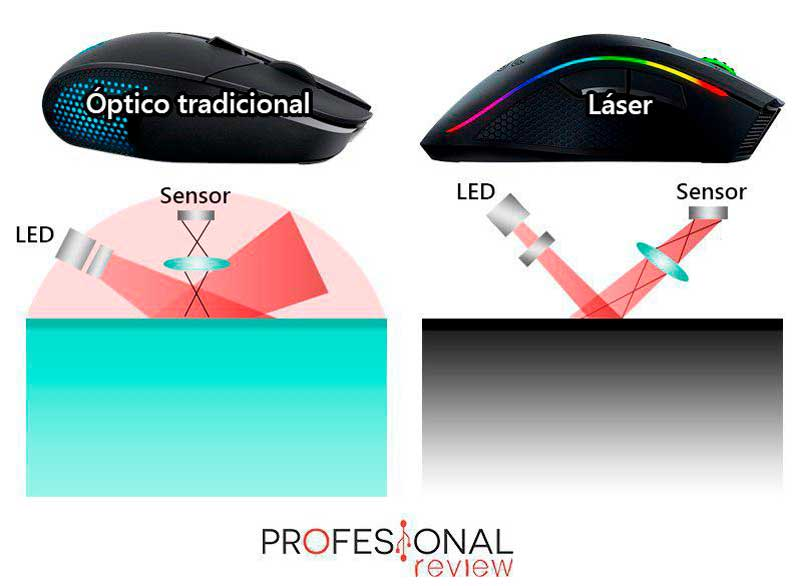
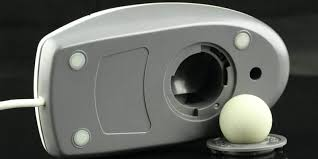
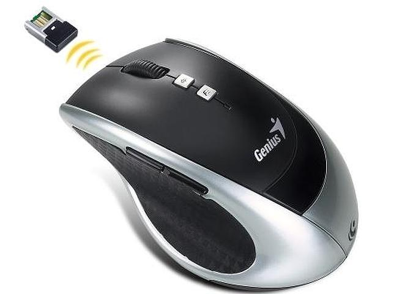

Trabajo Sitio Web (Ratón)
Tipos de ratones
Existen ratones de laser y ópticos
La diferencias entre los ratones ópticos y de laser son las siguientes:
- Los ratones ópticos tienen más precisión que los de laser, por lo que los ópticos son usados para videojuegos y los láser para tareas cotidianas
- Los ratones ópticos suelen ser más caros que los láser, además que los ratones láser pueden funcionar sobre casi cualquier superficie, a diferencia de los ópticos

Ratones de bola
Los ratones de bola funcionan a diferencia de los láser y ópticos mediante una bola que reconoce el movimiento, este sistema está descontinuado ya que son poco precisos y se rompen con facilidad
Ratones inalámbricos
Ratones inalámbricos, que no necesitan cables, funcionan mediante bluetooth o un receptor usb, la desventaja es que son más caros y los de mala calidad pueden tener una alta latencia.
Daniel García Campoy 1ºDAM